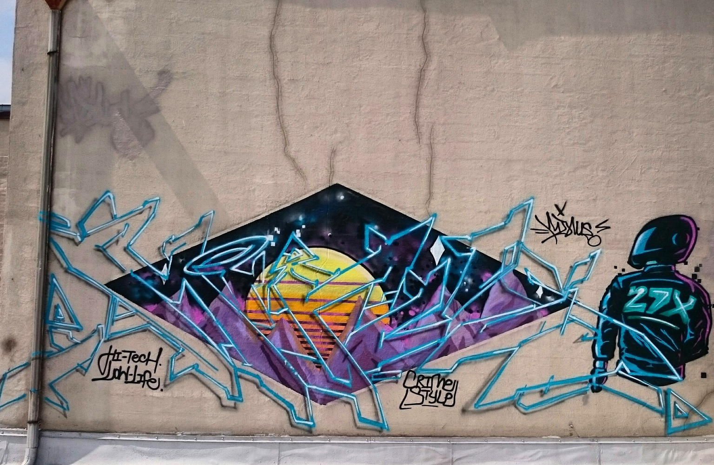

Kustomize is a tool that lets you create an entire Kubernetes application out of individual pieces — without touching the YAML for the individual components.
Kustomize traverses a Kubernetes manifest to add, remove or update configuration options without forking. It is available both as a standalone binary and as a native feature of kubectl.
Kustomize enables you to do that by creating a file that ties everything together, or optionally includes “overrides” for individual parameters.
In this example, I setup a Wordpress Kubernetes cluster using Kustomize. The source code is available here.
Set Minukube
For this demo, you can use a local Kubernetes cluster that can be provided by minikube. Install minikube following this.
Start your cluster:
minikube start
Install Kustomize
brew install kustomize
kustomize version
Deploying Wordpress
To run WordPress, it's necessary to connect WordPress with a MySQL database and access the service name of MySQL database from WordPress container.
Set the base directory:
KUSTOM_HOME=$(pwd)
BASE=$KUSTOM_HOME/base
Deploy Wordpress:
WORDPRESS_HOME=$BASE/wordpress
cd $WORDPRESS_HOME
kubectl apply -f $WORDPRESS_HOME
Deploy MySQL:
MYSQL_HOME=$BASE/mysql
cd $MYSQL_HOME
kubectl apply -f $MYSQL_HOME
In each of these two directories, you should see three resources YAML files, and they are the elements of each individual deployment:
deployment.yamlkustomization.yamlservice.yaml
In the next step, we will use Kustomize to deploy everything by combining these files into a single file. But before we move on, let's clean up the individual deployments:
kubectl delete -f $WORDPRESS_HOME
kubectl delete -f $MYSQL_HOME
The way Kustomize connects these two directories is by adding the following in their
kustomization.yaml files:
commonLabels:
app: my-wordpress
Now we can use Kustomize to build the new YAML. The output from Kustomize is the concatenation of YAML documents for all the resources we specified, with the common labels added, which can be piped directly to kubectl:
kustomize build $BASE | kubectl apply -f -
Now, you can check that the services are up (you should see mysql and wordpress):
kubectl get services
Applying Overlays
Overlays enable us to take the base YAML and selectively change pieces of it.
In this example, we’re going to create an overlay that includes a patch to change the Services to NodePort type services.
The overlay should not be in the same directory as the base files, and in this case, we are using $BASE/overlays/dev.
From victoria root directory, run:
OVERLAY_HOME=($pwd)/overlays
DEV_HOME=$OVERLAY_HOME/dev
cd $DEV_HOME
Now you can apply the overlay changes with:
kubectl apply -k $DEV_HOME
Cleaning app
To clean up the resources created from this exercise:
kubectl delete -f $BASE
minikube stop